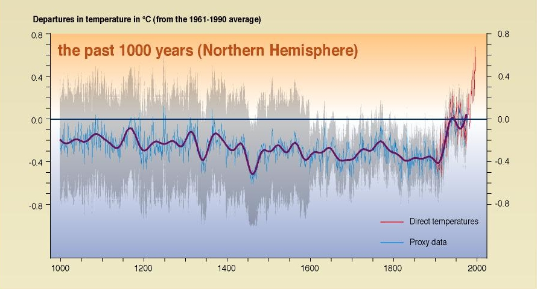

Introduction
MITRIE is funded by the Netherlands Environment Assessment Agency (RIVM) as part of the Netherlands `Scientific Assessment and Policy Analysis' (WAB) programme. More information about this programme can be found here (in Ducth).
There has been considerable interest in paleoclimate reconstructions of temperature over the last millennium. A wide variety of techniques have been used, with sometimes obscure details. The interrelation among the techniques is unclear. This project will seek to achieve two distinct but related aims: firstly, to aid public understanding by providing a web site explaining the scientific basis and providing data and software; secondly, to contribute to the scientific debate by reviewing recent work and attempting to isolate the key differences between the different methodologies within a common framework.
Proxy climate reconstructions draw on a wide variety of data sources. Reviews of some of the data sources can be found here.
NEW:: Our work is now published in a Climate of the Past Discussion paper. Software used for this paper can be downloaded here, the data used is provide in the supplementary material.
A comment on an error in McIntyre and McKitrick (2005) [Energy and Environment] here.
A comment on the disclosure of software and data can be found here.
